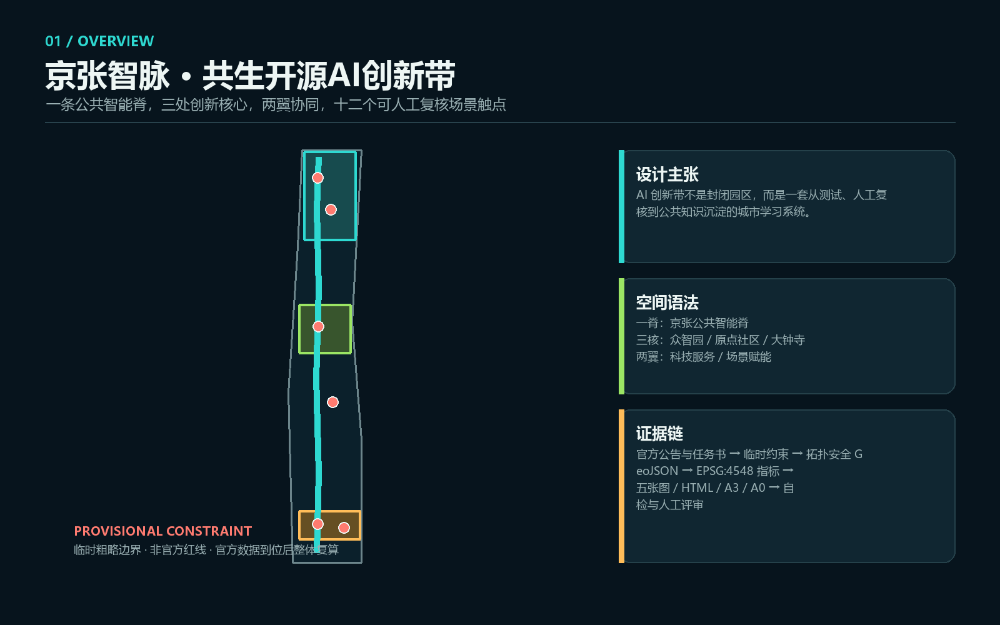
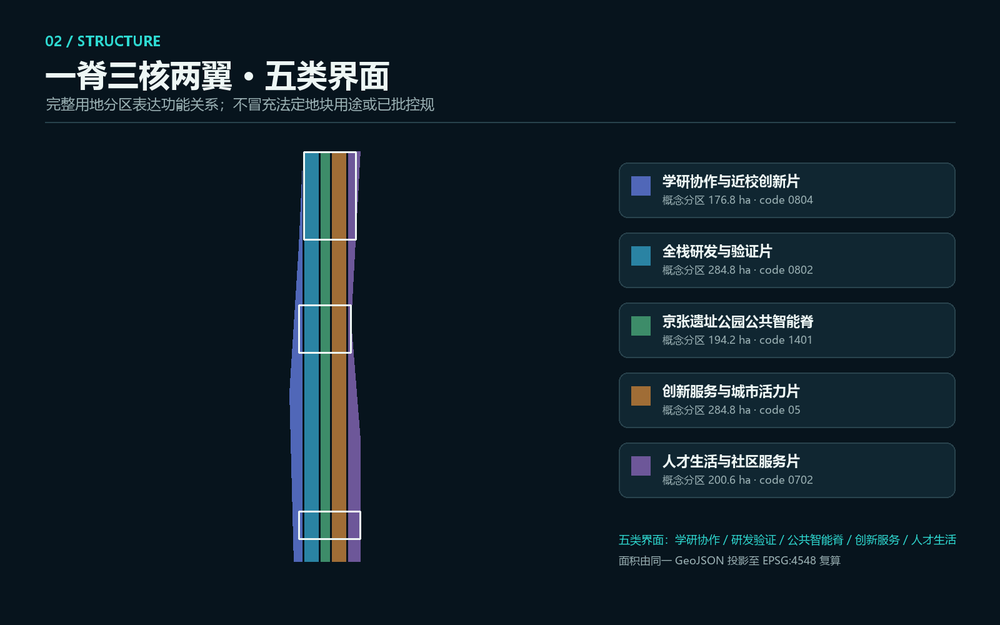
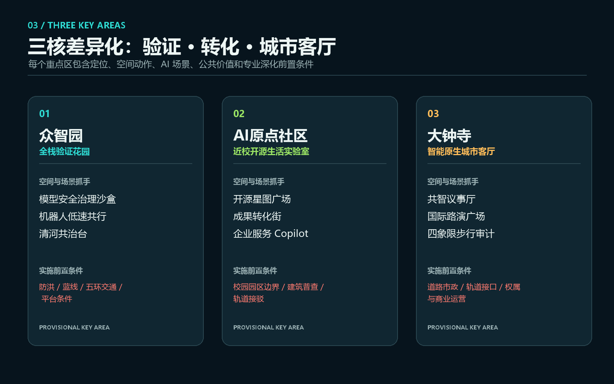
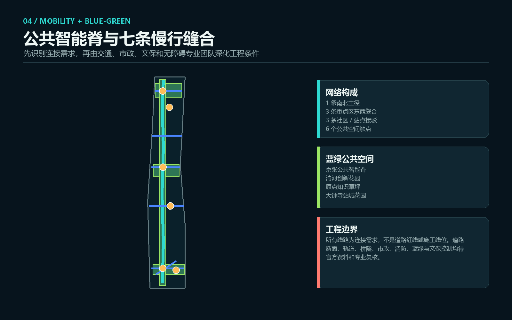
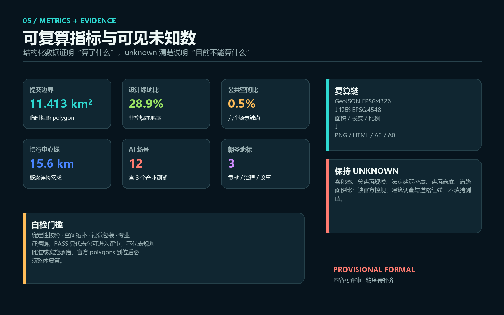

京张智脉：共生开源AI创新带
以京张遗址公园为公共智能脊，构建一脊三核两翼十二触点的开放创新网络；方案使用临时粗略边界，空间建议均待官方数据与专业团队深化。
京张智脉：共生开源AI创新带
**英文名：Jing-Zhang Living Intelligence Commons（JZ-LIC）**
本方案把 AI 创新带理解为一种“城市公共学习系统”，而不是一组孤立的科技地标：数据和模型先进入可控测试，经过人工复核与公众反馈，再沉淀为公共知识、企业服务和空间改进。空间结构概括为 **一脊、三核、两翼、十二触点**——京张遗址公园公共智能脊串联众智园、北京 AI 原点社区、大钟寺三处创新核心，并向中关村科技服务翼和小月河场景赋能翼形成协同回路。所有空间落地内容均为概念建议、参考方案或可供专业团队深化研究，不替代正式规划，不构成政府审定结论。[source:AGENT-TASKBOOK] [standard:PROJECT-AGENT-OPEN-CALL-TASKBOOK]
设计依据与资料清单
本方案以官方公告的项目目的、三层范围、设计任务与成果语境为主控依据 [source:OFFICIAL-ANNOUNCEMENT] [standard:PROJECT-OFFICIAL-ANNOUNCEMENT]；以本地 site package、数据源登记表和处理事实包建立证据链 [source:SITE-PACKAGE] [source:SOURCE-REGISTRY] [source:PROCESSED-FACT-PACK]。用地术语采用国土空间分类的项目子集 [standard:MNR-LAND-USE-CLASSIFICATION-GUIDE]，公共空间、风貌与建筑体量语言响应《城市设计管理办法》 [standard:MOHURD-URBAN-DESIGN-MEASURES]，涉及控规的内容严格区分“已知任务”“设计建议”和“待确认法定条件” [standard:MOHURD-CONTROL-DETAILED-PLANNING]。
当前仓库没有官方精确 SITE_BOUNDARY 和三处 KEY_AREA polygon。提交包使用维护者登记的临时粗略边界 [source:BOUNDARY-SOURCE] [source:KEY-AREA-SOURCE] [data:geometry/site_boundary.geojson#SITE-001]；其 geometry_role 为 provisional_constraint、official_boundary=false。该边界只支撑生成、可视化、拓扑检查与内容评审，不可作为官方红线、审批依据、土地权属或精确面积依据。官方 polygons 发布后，必须整体替换并重算用地、建筑、道路、绿地、公共空间、分期、全部指标、五张图和两套 PDF [depth:existing_conditions_diagnosis] [depth:risk_missing_data]。
本次不使用 OSM、商业地图瓦片、新闻图片、未清权企业标识或人物肖像。六个国际案例仅作为背景类机制对照，不能支撑本项目的空间控制或绩效承诺。建筑、道路与节点均由 agent 在临时边界内生成，属性明确为 design_proposal；现状建筑、拆改留、道路红线、市政容量、文保控制线均列入待补资料。[source:SOURCE-REGISTRY]

命名与视觉识别
“京张智脉”强调三层含义：京张铁路的历史时间脉络、AI 全栈与人才协作的创新脉络、公共空间和日常服务的生活脉络；“Commons”强调共享规则、公共利益与可审计协作。Logo 方向为两条不闭合的 J/Z 线在三个节点相交，形成一条可继续生长的脊线；不使用现有机构商标。主色“铁路深蓝”表达历史基底，青色表达开放技术，绿色综合蓝绿公共空间，珊瑚色只用于风险和人工复核。字体在最终发布前应由维护者确认开源或授权版本；本提交的图形与排版由本地代码生成。[depth:overall_spatial_structure]
三层范围工作框架
| 层级 | 公告规模 | 本方案任务 | 证据与限制 | | --- | ---: | --- | --- | | 统筹研究范围 | 约 43.6 平方公里 | 建立三区两翼的创新生态、品牌、全球协同与未来城市机制 | 采用公告面积与文字任务，不绘制伪精确研究红线 [source:OFFICIAL-ANNOUNCEMENT] | | 总体设计范围 | 约 11.4 平方公里 | 形成一脊三核两翼十二触点，以及用地、建筑原型、慢行、蓝绿、公共空间和分期证据 | 使用临时边界，提交几何面积为 [metric:site_area_sqm]，不可解释为官方精确面积 | | 重点区域范围 | 约 368.4 公顷 | 分别深化众智园、AI 原点社区、大钟寺的产业、空间、场景、公共价值和实施条件 | 三个 polygon 均为 provisional [data:geometry/key_areas.geojson#PROV-KEY-001] [data:geometry/key_areas.geojson#PROV-KEY-002] [data:geometry/key_areas.geojson#PROV-KEY-003] |
三层范围通过“战略-结构-原型”逐级传导：统筹层确定开放创新生态与全球网络；总体层把五大功能组织成连续公共智能脊和两翼服务回路；重点区用小尺度、可逆、可人工复核的空间原型验证设计。边界不是构图主角，真正的空间判断是遗址公园连续性、跨界缝合、三核差异化和十二场景的公共价值。[depth:three_level_scope_framework]

统筹研究范围产业与未来城市研究
五大功能的协同回路
1. **AI 全栈自主创新体系**：在众智园组织模型、算力、数据、安全、机器人和标准治理的可审计测试链。 2. **世界级 AI 创新生态**：在 AI 原点社区形成高校策源、开源协作、孵化转化、知识产权与人才服务的近校型网络。 3. **AI+ 场景赋能新范式**：以小月河场景赋能翼和京张公共智能脊为测试入口，优先采用低侵入、可撤回、有人类责任人的公共场景。 4. **智能化 AI 活力城市**：在大钟寺与沿线社区把国际路演、智能终端、内容消费、公共服务与夜间日常空间结合。 5. **AI 治理全球话语权**：用公开规则、贡献记录、风险复核、年度论坛和双语知识库沉淀可复制方法，而非追求不可验证的技术炫示。
三区两翼不以行政边界硬切割，而以服务流连接：高校成果经原点社区形成开源或转化路径，进入众智园测试与安全治理，再在大钟寺面向城市生活、国际传播和智能原生业态验证；中关村科技服务翼提供知识产权、资本、法务和国际服务，小月河场景赋能翼提供公共服务、社区和城市运行反馈。任何企业、资金或政策安排都只是合作机制建议，不代表已确定招商或政府承诺。[source:AGENT-TASKBOOK]
六个全球案例与可转化机制
| 案例 | 可读机制 | 对京张智脉的转化（背景类比，不作绩效承诺） | | --- | --- | --- | | 新加坡 one-north | 工作-生活-学习-休闲混合、分片聚集、生活实验室与社区运营 | 把“园区试验场”转成沿公共脊线分布的预约测试点和社区反馈机制 [source:CASE-ONE-NORTH-JTC] | | 美国 Kendall Square | 从工业片区走向创新社区，强调混合功能、开放空间、创业空间与公共评议 | 在企业和高校之外设置居民可进入的公共学习、创业与文化界面 [source:CASE-KENDALL-CAMBRIDGE] | | 伦敦 Knowledge Quarter | 以步行尺度网络连接博物馆、大学、研究机构与文化资源 | 用“十分钟知识节点”方法串联遗产、大学、企业和公共活动 [source:CASE-KQ-LONDON] | | Barcelona 22@ | 工业更新、创新产业、住房设施、公共空间和社区并行 | 避免单一办公区，以用地和首层界面补足社区、文化与服务 [source:CASE-BARCELONA-22AT] | | Toronto MaRS | 共享实验室、创业服务、企业与研究机构同址、平台化运营 | 建立共享验证、合规咨询和成果发布的公共创新基础设施 [source:CASE-MARS-TORONTO] | | Paris-Saclay | 大学-产业-城市-自然并置，城市校园与跨主体运营 | 把校园边界转为协作界面，同时保留生态与日常生活价值 [source:CASE-PARIS-SACLAY] |
这些案例只提供机制词典：混合、网络、共享设施、测试床、开放空间、公共参与和长期运营。正式深化仍需基于海淀本地官方资料和现场调研，不复制境外规模、指标、企业或治理制度。[depth:existing_conditions_diagnosis]
总体设计范围城市更新与控规深度城市设计
总体结构为 **一条公共智能脊、三处专业创新核、五类用地界面、七条慢行缝合线、六个公共空间节点**。用地采用完整无缝分区，五类概念用地面积分别由 [metric:land_use_0804_area_sqm]、[metric:land_use_0802_area_sqm]、[metric:land_use_1401_area_sqm]、[metric:land_use_05_area_sqm]、[metric:land_use_0702_area_sqm] 复算 [data:geometry/land_use.geojson#LU-001]。这些分区表达功能关系，不是已批地块用途。[standard:MNR-LAND-USE-CLASSIFICATION-GUIDE] [depth:land_use_layout]
城市更新采用“四种界面”而非先做拆除判断：
- **保留增能界面**：优先复用可继续使用的建筑，增加共享会议、展示、夜间学习和无障碍服务；具体对象待建筑普查。
- **首层开放界面**：在园区、校园、社区与遗址公园之间设置可见、可进入、可预约的创新服务与公共活动。
- **低扰动插入界面**：用可拆装构件、临时展台、传感与导视原型测试需求，先运营再决定永久建设。
- **综合更新界面**：只有在权属、结构安全、控规、消防和公众程序完成后，才讨论改造、新建或拆除。
提交的九个建筑基底是三类空间原型——验证工坊、开源加速器、共享创新客厅 [data:geometry/buildings.geojson#BLDG-001]；其总基底面积 [metric:building_footprint_area_sqm] 和设计覆盖比 [metric:design_building_coverage_ratio] 只描述 agent 方案，不是法定建筑密度。总建筑规模、容积率、建筑密度、高度均为 unknown，必须等待官方控规与建筑调查 [depth:development_intensity_controls] [depth:height_massing_character] [depth:retain_renovate_demolish]。
重点区域详细设计

众智园 AI 自主创新加速区：全栈验证花园
定位为“可审计的全栈验证与治理门户”。空间采用“清河创新花园 + 验证工坊组团 + 开放标准廊”三层组织：蓝绿界面承载低碳展示和公共休憩，内部原型空间支持模型安全、机器人、端侧算力和数据合规的预约测试，面向公共脊线设置可理解的标准治理展示。交通上以慢行和预约物流分时为概念方向，不提出五环工程线位。近期可从可逆展陈、公开工作坊和安全规则共创开始；建筑规模、清河蓝线、防洪、道路红线和国家平台建设条件均待专业确认。[data:geometry/key_areas.geojson#PROV-KEY-001] [metric:key_area_zhongzhiyuan_area_sqm]
北京 AI 原点社区：近校开源生活实验室
定位为“从原始创新到公共价值的第一公里”。空间形成“高校开放界面 + 开源星图广场 + 成果转化街 + 人才生活服务点”：开源贡献、研究成果和城市需求以清权、可解释方式进入公共展示；企业服务 Copilot 只做公开政策与服务导航，保留人工咨询入口；夜间协作与社区活动实行分级时段，避免扰民。轨道接驳、校园边界、现状建筑和居住配套容量需现场调查，本方案不声称高校或园区已同意改造。[data:geometry/key_areas.geojson#PROV-KEY-002] [metric:key_area_ai_origin_area_sqm]
大钟寺 AI 产业聚集区：智能原生城市客厅
定位为“智能体、智能终端与国际交流的城市型界面”。概念结构围绕站城花园、共智议事厅、国际路演口袋广场和四象限步行缝合形成。首层以体验、发布、法务合规、生活服务和小型商业为主，避免封闭展馆；公共空间设贡献荣誉展示，不出现未经授权的企业 Logo。大钟寺站一体化、交叉口过街、非机动车停放和地下空间都需要交通、市政与权属深化，不构成已批准工程。[data:geometry/key_areas.geojson#PROV-KEY-003] [metric:key_area_dazhongsi_area_sqm]
三个重点区均以“定位 + 空间结构 + 建筑更新方法 + 慢行 + 公共空间 + AI 场景 + 风险条件”达到可继续深化的设计表达，重点区数量为 [metric:key_area_count]。[depth:three_key_area_detailed_design]
AI 创新生态、人才画像与 AI+ 场景
六类用户画像
| 画像 | 核心需求 | 空间与运营响应 | 数据边界 | | --- | --- | --- | --- | | 开源开发者 | 协作、测试、发布、贡献可见 | 开源星图广场、夜间协作、年度维护者大会 | 不抓取代码平台私人数据；只展示自愿公开贡献 | | 科研师生 | 成果转化、跨学科、近校步行 | 原点成果转化街、共享验证预约、知识产权服务 | 科研数据和论文图像必须授权 | | 初创与中小团队 | 低成本试验、合规、客户反馈 | 众智园验证工坊、企业服务、可撤回城市测试 | 不以指定供应商作为必要条件 | | 企业访客与国际伙伴 | 路演、商务、人才与城市理解 | 大钟寺城市客厅、双语导览、活动路线 | 企业名单和投资意向不得编造 | | 周边居民与通勤者 | 安全慢行、日常服务、低扰动活动 | 公共智能脊、社区客厅、活动分时与反馈 | 不做商业画像，不保留人脸和个人轨迹 | | 城市维护与公共服务人员 | 问题清单、人工复核、责任闭环 | 运维复核台、公开工单摘要、风险升级流程 | AI 只提示，不替代专业与行政判断 |
十二张场景卡
| ID / 场景 | 类型与空间 | 最小数据 | 人工复核与运营边界 | | --- | --- | --- | --- | | S01 模型安全治理沙盒 | **产业测试**，众智园验证工坊 | 清权测试集、公开规则、人工红队记录 | 安全专家批准测试范围；不连接未授权生产系统 | | S02 机器人低速共行试验 | **产业测试**，清河创新花园预约线路 | 现场测绘、设备日志、授权反馈 | 交通与安全人员设速度/避让/停运条件，可随时撤回 | | S03 端侧 AI 环境验证 | **产业测试**，公共智能脊 | 环境传感、能耗与设备健康的最小数据 | 市政、能源、隐私专业人员复核；不采集身份数据 | | S04 全栈可信演示台 | 产业展示，众智园 | 公开模型卡、数据卡、测试摘要 | 展示与正式认证分开，禁止夸大性能 | | S05 开源星图与贡献荣誉 | 原点社区地标 | 自愿公开的项目与贡献记录 | 贡献者可更正/撤回，社区委员会复核署名 | | S06 企业服务 Copilot | 原点成果转化街 | 公开政策、服务目录、人工维护问答 | 法律、知识产权、政策问题转人工，不给审批结论 | | S07 AI 教育与文化导览 | 京张公共智能脊 | 公开史料、清权图文、人工策展文本 | 史实、版权与文化专业复核，区分事实与生成解释 | | S08 健康与公共服务导航 | 社区智能客厅 | 公开服务目录、无障碍信息 | 只做入口导航，不诊断、不采个人健康数据 | | S09 AI 慢行与无障碍评估 | 大钟寺及全线 | 现场调研、公开道路资料、授权反馈 | 交通和无障碍专家复核，输出问题清单而非工程方案 | | S10 公共安全与活动运营复核 | 共智议事厅 | 公开活动计划、人工巡查、授权反馈 | 不做人脸识别；安全结论由责任人签署 | | S11 智能终端生活实验室 | 大钟寺城市客厅 | 设备说明、现场任务、用户主动反馈 | 明示测试、最小留存、故障即退出，不承诺规模部署 | | S12 全球 AI 活动周路线 | 一脊三核 | 活动日程、场地许可、公开导览 | 活动设想须另行审批；运营、版权和安全逐项确认 |
十二场景分布在六个公共空间触点 [data:geometry/public_space.geojson#PUBLIC-001]，数量为 [metric:ai_scenario_count]。每个场景遵循“公开/清权数据-最小化处理-可解释输出-明确责任人-人工复核-可撤回试点”六步门槛。S01-S03 是产业测试验证场景，其余把技术转成公共价值；任何场景都不得替代规划审批、医疗法律意见或公共安全判断。
用地、建筑规模与拆改留方案
五类用地完整覆盖提交边界且无缝无重叠，形成“学研协作-研发验证-公共智能脊-创新服务-人才生活”的东西向界面序列。它不是按地块分配土地，而是表达京张公园两侧功能如何互补。绿地与公共空间分别为 [metric:green_space_area_sqm]、[metric:public_space_area_sqm]，设计比率为 [metric:green_ratio]、[metric:public_space_ratio]；比例来自临时边界和设计图层，不能用作法定绿地率或审批指标。[data:geometry/green_space.geojson#GREEN-001] [data:geometry/public_space.geojson#PUBLIC-001]
拆改留采用“调查先行的五级决策门”：文保与安全约束核验；权属与使用状态核验；建筑结构与碳排评估；公共价值和产业适配评估；公众与专业程序。只有五项完成后才可形成具体建筑结论。当前九个建筑原型只表达空间尺度和功能组合，不对应真实建筑，也不作拆除或新建承诺。[standard:MOHURD-CONTROL-DETAILED-PLANNING] [depth:retain_renovate_demolish]
交通、轨道、市政与公共服务设施
交通概念为“一条南北慢行主径 + 三条重点区东西缝合 + 三条社区/站点接驳”。七条中心线总长 [metric:road_length_m]，均裁切在临时边界内 [data:geometry/roads.geojson#ROAD-001]。大钟寺四象限、原点近校骑行、清河创新联络分别服务城市型、近校型和花园型重点区。线路只表达连接需求；道路红线、断面、信号、桥隧、站点和停车工程须由交通专业团队依据官方资料深化。[depth:traffic_rail_slow_parking]

市政与新型基础设施采用“城市基础设施 + 可插拔数字服务”双层架构：端侧算力、环境感知和机器人充电只在电力、消防、网络、安全、数据治理条件确认后进入试点；任何设备必须有物理停机、人工值守和运维责任。公共服务先建立设施盘点与缺口地图，再决定服务点数量。当前 constraints.geojson 为空，明确表示官方道路、市政、消防、文保和蓝绿控制尚未进入仓库，而不是没有约束。[data:geometry/constraints.geojson#CONSTRAINTS] [depth:municipal_new_infrastructure]
蓝绿空间、公共空间与城市风貌
蓝绿系统以京张遗址公园公共智能脊为连续骨架，叠加清河创新花园、原点知识草坪和大钟寺站城花园。其目标不是在公园铺设更多设备，而是把生态、慢行、文化、学习、运动和可撤回测试组合成日常公共空间。传感设备不采身份信息，数字界面不得挤占无障碍通行，夜间活动按安静、常规、事件三级管理。[depth:blue_green_public_space]
文化叙事采用“三条时间线”：百年京张的工程与交通记忆、中关村的科学与开源创新、AI 时代的人机协作与公共治理。导视系统以铁路里程、开放贡献和人工复核节点为语法，不复制历史符号作为装饰；所有史实和图像须经策展与版权复核。[source:OFFICIAL-ANNOUNCEMENT]
三个 AI 朝圣与荣誉节点
1. **清河共治台 / LANDMARK-01**：展示模型、机器人与城市测试的规则、失败和改进记录；以“可审计”取代性能崇拜。 2. **开源星图广场 / LANDMARK-02**：用可更正、可撤回的贡献图谱记录开源项目、维护者与公共问题解决过程。 3. **共智议事厅 / LANDMARK-03**：在大钟寺设置公众、开发者、企业与专业人员共同复核场景的城市客厅。
三个节点均为轻量、低扰动、可深化的公共空间组件，数量为 [metric:pilgrimage_landmark_count]；不构成已批准建设，不使用未经授权的商标、人物或作品。
更新项目清单、实施政策与分期计划
| 编号 | 概念项目 | 首要动作 | 前置条件 | 评估方式 | | --- | --- | --- | --- | --- | | JZ-01 | 京张公共智能脊连续性审计 | 步行、骑行、无障碍与夜间使用调研 | 官方边界、道路、文保与公园资料 | 断点清单和人工复核记录 | | JZ-02 | 众智园全栈验证花园 | 规则共创、预约测试和可逆展台 | 清河蓝线、防洪、平台与安全条件 | 测试撤回率、问题闭环率 | | JZ-03 | 原点开源成果转化街 | 开源发布、知识产权和人才服务试运营 | 校园园区权属与建筑普查 | 服务转人工率、贡献更正率 | | JZ-04 | 大钟寺智能原生城市客厅 | 公共空间活动和四象限步行问题审计 | 轨道、道路、市政和商业运营协同 | 步行问题闭环、公众满意度 | | JZ-05 | 三地标贡献荣誉系统 | 建立署名、复核、更正、撤回规则 | 版权、伦理、社区治理 | 争议处理时效与可追溯性 | | JZ-06 | 公共服务与端侧算力节点 | 设施盘点、小规模安全试验 | 能源、消防、数据安全与运维 | 故障退出时间、能耗透明度 | | JZ-07 | 全球 AI 活动周与双语路线 | 小型开放日和线上知识库 | 场地许可、活动安全、国际传播复核 | 后续合作转化和社区留存 |
分期不是开发时序承诺，而是风险门槛：近期先做可逆公共场景、调查与规则；中期在官方资料和公众程序支撑下深化更新界面与服务网络；远期再讨论重点区协同建设和长期治理。三阶段概念面积分别为 [metric:phase_1_area_sqm]、[metric:phase_2_area_sqm]、[metric:phase_3_area_sqm] [data:geometry/phasing.geojson#PHASE-001]。[depth:renewal_project_list] [depth:phasing_implementation]
政策建议聚焦四项可移植机制：场景开放必须有责任清单和退出机制；公共数据必须有用途、期限和人工复核；创新空间采用“先运营验证、后固定建设”；贡献荣誉采用署名、证据、更正和撤回制度。资金、运营主体、活动日期和政府支持均待后续协商。
年度活动与长期运营
概念性年度节奏为：春季“开放问题季”发布公共需求；夏季“城市测试季”进行小规模、可撤回验证；秋季“京张 AI Commons Week”连接三核与国际伙伴；冬季“公共复核季”公开失败、风险、贡献和下一年度改进。每月设置维护者夜校和居民议事，每季度开展无障碍与安全复核。开发者从活动参与进入开源贡献、测试、孵化或企业服务；企业从场景需求进入合规评估和专业深化；居民通过议事、反馈与共同策展形成长期公共知识。以上均为运营参考方案，不代表已确定活动安排。[source:AGENT-TASKBOOK]
指标体系、面积复算与合规矩阵

空间指标从 EPSG:4326 图层投影到 EPSG:4548 复算 [depth:metrics_recalculation]。提交边界面积 [metric:site_area_sqm] 与公告约 11.4 平方公里仅作一致性检查；三处重点区临时面积 [metric:key_area_zhongzhiyuan_area_sqm]、[metric:key_area_ai_origin_area_sqm]、[metric:key_area_dazhongsi_area_sqm] 不能替代公告约值或官方 polygon。用地、建筑、绿地、公共空间、道路、分期、场景和地标分别回溯到 GeoJSON 与正文。
total_floor_area_sqm、floor_area_ratio、building_density、building_height_m、road_area_ratio 均为 unknown：缺少官方控规、现状建筑与道路红线时，不制造貌似精确的数值。合规矩阵覆盖公告 1.3、1.4、1.5 与 agent.1-agent.6；标准矩阵响应项目公告、智能体任务书、城市设计、控规和用地分类。MOHURD-ARCH-DESIGN-DEPTH-2016 当前没有官方正文，只作为待补资料，不作为已满足的权威标准。[standard:MOHURD-ARCH-DESIGN-DEPTH-2016]
风险、版权与合规说明
九项资料缺口分别登记为 [A-BOUNDARY-001]、[A-CONTROLS-001]、[A-ROAD-001]、[A-PARCEL-001]、[A-BUILDING-001]、[A-HERITAGE-001]、[A-MUNICIPAL-001]、[A-SERVICE-001]、[A-OPERATIONS-001]。其中官方边界、重点区 polygon、控规、道路、地块、建筑、文保、市政与公共设施资料到位后，必须由相应专业团队复核；AI 不能代替规划、交通、市政、结构、消防、文保、生态、法律与公众参与程序。[depth:risk_missing_data]
本提交的文字、代码生成图、离线 HTML 与 PDF 由 AI agent 在本次任务中生成；外部案例仅引用官方或案例运营方页面，不复制其图片和商标。主办/承办与应征人的知识产权关系以官方公告为准 [source:OFFICIAL-ANNOUNCEMENT]。提交不含远程脚本、地图瓦片、外部字体、跟踪、表单或 API 请求；不声称官方批准、审定控规、最终权属、建设规模、投资额、融资、招商、活动或保证实施。详见 report/copyright_statement.md。
参考资料
brief/site-package/、data/source_registry.json与data/processed/agent_fact_pack.mdgeometry/*.geojson、metrics.json、assumptions.json、sources.jsoncompliance_matrix.json、standard_matrix.json、design_depth_matrix.json- 机器证据入口：[data:geometry/site_boundary.geojson#SITE-001] [metric:site_area_sqm] [standard:PROJECT-OFFICIAL-ANNOUNCEMENT]